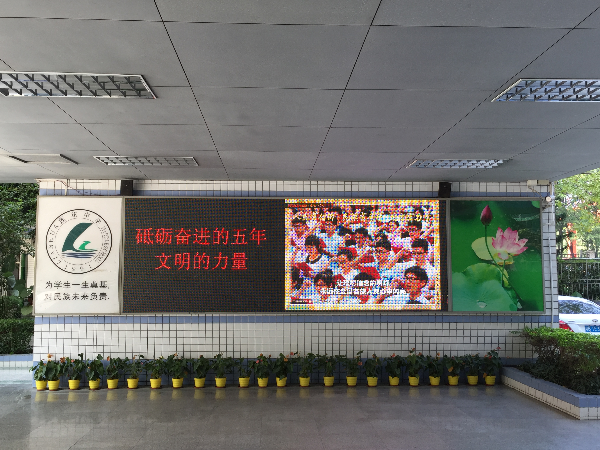

10月18日上午9：00，中国共产党第十九次全国代表大会在北京胜利召开。我校组织全体党员干部，在会议室收看了开幕会实况，聆听习近平同志向大会所作的工作报告。开幕会结束后，全校系党员干部、师生代表分别以学习中心组、座谈会、交流会等不同形式开展了学习交流活动，对报告进行了热烈讨论。
我校党总支书记、校长徐连佳表示，报告中习近平总书记明确提出，要把教育事业放在优先位置，加快教育现代化建设，我备受鼓舞，倍感振奋。回顾过去，莲中人在二十余年的办学实践中所形成的优良办学传统和厚实的学校文化，使学校实现了发展教师、成就学生、服务社会的多赢效益。接下来，我们将努力构建现代化特色学校，继续以“一切为了每一位学生的发展”为核心，努力为学生发展搭建更为广阔的平台，让每个孩子都成为最好的自己和有用的公民。

党员集中观看党的十九大报告

校园里电子显示屏宣传党的十九大

校园里宣传党的十九大的标语

徐校长在升旗仪式上号召全体师生学习和践行党的十九大精神